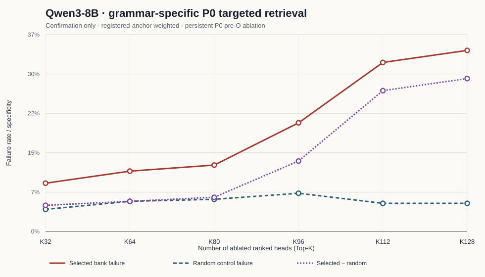

The primary dose response is evaluated only on the frozen confirmation split. Each grammar uses its own P0-event ranking, and rates are pooled by registered anchors rather than giving rare grammars equal weight.

| Split | Anchors | Selected failure | Random failure | Selected−random |
|---|---|---|---|---|
| discovery | 169 | 32.5% | 4.3% | 28.2% |
| confirmation | 87 | 34.5% | 5.4% | 29.1% |
| Grammar | Full anchors | Confirmation anchors | Status |
|---|---|---|---|
adjacent_rank_after_city | 131 | 45 | primary |
adjacent_rank_before_city | 57 | 19 | primary |
same_unit_rank_before_city | 35 | 15 | primary |
structural_unmarked | 27 | 6 | exploratory |
structural_invariant_bullet | 3 | 1 | exploratory |
evidence_sequence_unranked | 2 | 1 | exploratory |
structural_explicit_rank_before_city | 1 | 0 | exploratory |
Grammars with fewer than 10 confirmation anchors are labelled exploratory. They remain in the registered overall panel with their natural anchor weight, but are not used for standalone generalization claims.